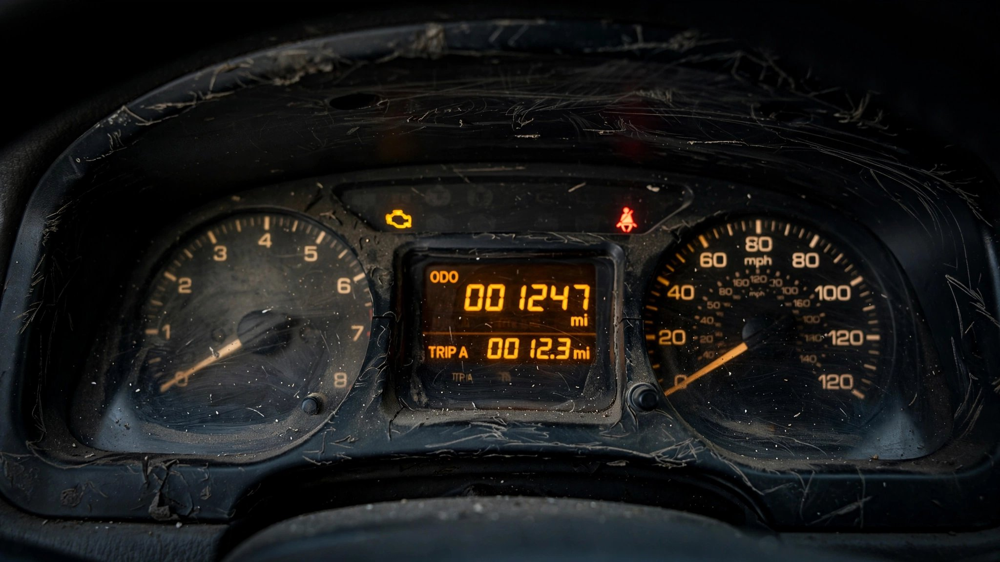

NHTSA’s Odometer Fraud Estimate Hasn’t Been Updated Since the iPod Launched

Every year, 452,000 vehicles are sold in the United States with odometers that lie about how far they’ve been driven.[1] NHTSA derived that number from a single study published in April 2002, DOT HS 809 441, built on a 10,000-vehicle Carfax sample extrapolated nationwide. It has not been repeated.
That study found a 3.47% rollback probability during a vehicle’s first 11 years and pegged consumer losses at $1.06 billion annually.[1] NHTSA still cites those exact figures on its website today, same numbers, same methodology, nothing updated in 24 years.
In 2002, rolling back an odometer meant cracking open an instrument cluster and reversing a mechanical drum. Now it means plugging a $30 OBD-II dongle into the port beneath your steering column. NHTSA acknowledges as much: its own advisory warns that “digital odometers that have been tampered with are even harder to detect than traditional mechanical odometers.”[2] Acknowledging a problem and studying it are different activities.
Enforcement scales to match. Four criminal investigators, one per regional office, cover the entire country.[3] That is 113,000 estimated cases per investigator per year. Across its operational history, the office has secured 250 total convictions. CBP officers in Philadelphia seized 29 odometer manipulation devices in a single shipment bound for 12 states.[4] Those were the ones caught at the border.
Nobody has ever counted the deaths. A car whose odometer reads 40,000 when the truth is 130,000 is carrying brake pads three service intervals past due, suspension components beyond their design envelope, and a timing chain on borrowed time. Every one of those is a crash vector the owner has no reason to suspect. But FARS, the federal fatal-crash database, does not record the odometer reading of involved vehicles.[5] Neither does NHTSA’s complaint system. So the safety cost of odometer fraud isn’t unknown — it is unknowable, because no federal database captures it.
Used-car buyers do have defenses that did not exist in 2002. Carfax, AutoCheck, and NMVTIS flag mileage discrepancies at title transfer, and any competent dealer runs a history report before listing. It is plausible the fraud rate has declined. But plausible is not measured, and NHTSA’s refusal to recheck means nobody knows whether $30 tamper dongles shipping through international mail have outpaced whatever deterrence a $39 Carfax report provides.
What you should do: Before buying any used vehicle, pull a vehicle history report and compare its mileage records against the odometer and any service stickers inside the door frame or under the hood. If a car shows suspiciously low miles for its age (35,000 on a ten-year-old sedan, for instance), have an independent mechanic inspect brake wear, tire tread depth, and suspension components for signs of use the display doesn’t reflect. Report suspected fraud to NHTSA at 888-327-4236 or your state enforcement agency. Check your VIN at nhtsa.gov/recalls.
Sources & References
- NHTSA, Preliminary Report: The Incidence Rate of Odometer Fraud, DOT HS 809 441, April 2002. 10,000-vehicle national sample using Carfax title records. nhtsa.gov
- NHTSA, Consumer Advisory: Tips to Protect Against Odometer Fraud. nhtsa.gov
- NHTSA, Office of Odometer Fraud Investigation: four regional offices, each staffed with one criminal investigator. nhtsa.gov
- U.S. Customs and Border Protection, “Philadelphia CBP Seizes Automobile Devices that Cheats Drivers and Threatens Their Safety.” 29 devices seized, destined for 12 states. cbp.gov
- NHTSA, Fatality Analysis Reporting System (FARS), 2014–2023. FARS records vehicle make, model, model year, and VIN but does not capture odometer readings of involved vehicles. nhtsa.gov